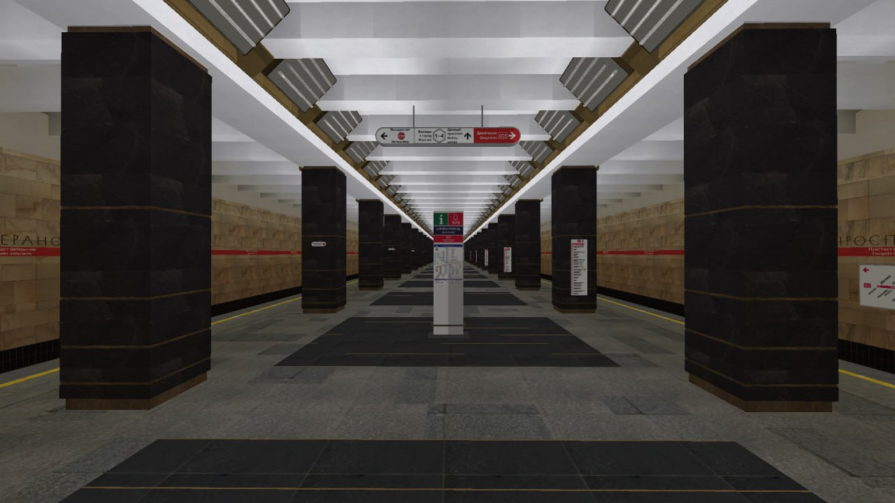

Кировско-Выборгская линия
Первая линия Петербургского метро. Открыта 15 ноября 1955 года.

Девяткино
1
Конечная станция, расположена рядом с ж/д станцией «Девяткино». Открыта 29 декабря 1978 года.

Гражданский проспект
2
Открыта 29 декабря 1978 года. Глубина заложения — 67 м. Колонная трёхсводчатая станция глубокого заложения.
Академическая
3
Открыта 31 декабря 1975 года. Глубина — 64 м. Пилонная станция с укороченным центральным залом.
Проспект Ветеранов
19
Конечная станция на юге города. Открыта 29 сентября 1977 года. Колонная трёхсводчатая станция мелкого заложения.